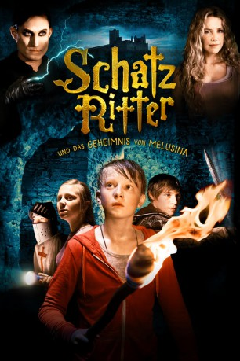

#10369 Die Schatzritter und das Geheimnis von Melusina
 
 IMDB-Wertung: 6.1 / 10
IMDB-Wertung: 6.1 / 10  Metascore: 0
Metascore: 0 
Sieben Jahre nach dem mysteriösen Tod seiner Mutter, lebt der elfjährige Jeff mit seinem Vater auf dem eigenen Campingplatz, direkt neben einer Burgruine der Familie. Es sind Sommerferien und Jeff macht mit seinen Freunden Urlaub auf dem Campingplatz. Als die Kinder auf Hinweise auf den Tod Jeffs Mutter treffen, beginnen sie mit Nachforschungen. Sie entdecken Spuren zum sagenumwobenen Schatz der Meerjungfrau Melusina. Es beginnt ein aufregendes Abenteuer für die Kinderbande, doch sind sie nicht alleine auf der Suche nach dem Schatz.
Jahr: 2012
Dauer: 95 Minuten
FSK: 6
Land: Luxemburg Studio: Farbfilm-VerleihTonspuren:
Untertitel:
Auflösung: 1080p (1920x1080) Größe: 6471 MB
Genre: Abenteuer, Familie
Regisseur: Laura Schroeder
Drehbuch: Stefan Schaller, Martin Dolejs, Oliver Kahl, Eileen Byrne, Christoph Englert
Soundtrack: Natalia Dittrich
Darsteller:
 Clemens Schick als Duc de Barry
Clemens Schick als Duc de Barry Vicky Krieps als Marie Kutter
Vicky Krieps als Marie Kutter- Anita Höfer als Tourist
- Anton Glas als Jeff Kutter
- Lana Welter als Julia
- Thierry Koob als Leo
- Tun Schon als Killer
 Alexandra Neldel als Melanie
Alexandra Neldel als Melanie- Luc Feit als Michael Kutter
- Jean-Paul Raths als Jean D'Arras
- Jean-François Wolff als Thüring von Ringoltingen
- Finn Luis Hilmert als Young Jeff
- Annette Schlechter als Tourist
- Marco Lorenzini als Teacher Heisbourg
- Pitt Simon als Doctor
- Etienne Halsdorf als Sebastien
- Charel Peffer als Thomas
- Antoine Lesch als Victor
- Barclay Wijnbergen als Lisa
- Tammy Reichling als Julia & Leo's Mother
- Elisabeth Brück als Killer's Mother
- Dan Tanson als Julia & Leo's Father
- Anne Simon als Cleaning Woman
- Pascal Bongermino als
- Sara Dondelinger als
- Jim Da Rocha als
- Nikela Dondelinger als
- Niall Foley als
- Justin Friden als
- Noemi Gaul als
- Michèle Gaspar als
- Joshua Ginter als
- Allen Hegartry als
- Lee Hippert als
- Grace Hegartry als
- Martin Kahl als
- Pol Kremp als
- Elise Krieps als
- Laurent Kurzmann als
- Micheline Lieser-Lammar als
- Daniel Lieser als
- Theo Lieser als
- Victor Lieser als
- Yannick Manderscheid als
- Oliver Muller als
- Michel Pfeiffer als
- Michèle Nau als
- Emil Schartz als
- Claude Nau als
- Sophie Ramos als
Datei: X:\Märchen\Schatzritter und das Geheimnis von Melusina, Die (2012, FSK6, 1920x1080).mkv seit 02.01.2019
Festplatte: Kinder-Filme+Trick
 Es gibt insgesamt 61 Filme in der Gruppe 'Märchen'
Es gibt insgesamt 61 Filme in der Gruppe 'Märchen'